Classe: Duelista
A Agente chinesa Hush usa sua telecinese para resolver os casos mais confidenciais. Lutando com precisão e elegância, ela redireciona seus utilitários de combate no ar para desestabilizar e deslocar a equipe inimiga antes de suspendê-la para o golpe final.

EQUIPE Deslocamento. DISPARE para lançar ou use o DISPARO ALTERNATIVO para preparar. REATIVE para direcionar para a sua retícula. Explode em qualquer superfície ou após um tempo, puxando todos os jogadores em direção ao centro e causando Concussão se colidirem com uma superfície ou com outro jogador.
A habilidade é redefinida a cada dois abates.

Crie INSTANTANEAMENTE uma âncora. Se Hush estiver no ar, levita brevemente no lugar. Após um intervalo, se lança na direção da âncora.

EQUIPE Lampejo. DISPARE para lançar ou use o DISPARO ALTERNATIVO para preparar. REATIVE para direcionar para a sua retícula. Explode em qualquer superfície ou após um tempo, cegando quem estiver olhando.

Prepare Suspensão INSTANTANEAMENTE. DISPARE para lançar à frente, guiando com sua retícula. REATIVE ou DISPARE novamente para detonar, fazendo todos os jogadores levitarem.

Hush pode coletar armas, a Spike e INTERAGIR com interruptores de uma distância maior.
Dicas:
Classe: Duelista
Iso é um mercenário chinês que entra em estado de fluxo para desmantelar os oponentes. Ele reconfigura a energia do ambiente para se proteger de balas e avança totalmente focado em direção ao próximo duelo até a morte.

EQUIPE Contingência. DISPARE para lançar uma muralha indestrutível que bloqueia a visão. Use o DISPARO ALTERNATIVO para lançar uma parede mais lenta.

EQUIPE Centelha Debilitante. DISPARE para lançar. Aplica Supressão e Vulnerável a todos os jogadores.

Canalize Foco INSTANTANEAMENTE. Receba um escudo que bloqueia uma instância de dano.

EQUIPE Contrato de Abate. DISPARE para lançar uma zona que puxa você e o primeiro inimigo atingido para um duelo.
Canaliza Foco no início de um duelo.
Enquanto estiver com Foco, recarregará mais rápido e criará orbes de energia destrutíveis a partir de inimigos que sofrerem dano de Iso ou forem abatidos por ele.
Ao destruir um orbe de energia, recebe um escudo que bloqueia uma instância de dano e renova o Foco.
Dicas:
Classe: Duelista
Representando a Coreia do Sul, sua terra natal, Jett tem um estilo de luta ágil e evasivo que permite que ela assuma riscos como ninguém. Ela corre em meio a qualquer confronto, cortando os inimigos antes mesmo que eles percebam quem ou o que os atingiu.

Prepare um avanço INSTANTANEAMENTE. REATIVE para se deslocar para a frente ou na direção da sua movimentação.
A habilidade é redefinida a cada dois abates.

Lance-se INSTANTANEAMENTE bem alto no ar.

Arremesse uma nuvem INSTANTANEAMENTE. Forma uma fumaça breve em qualquer superfície ou após um intervalo. SEGURE ATIVAR para guiar em direção à sua retícula.

Acesse INSTANTANEAMENTE cinco facas de arremesso precisas que causam dano letal com acertos diretos na cabeça.
DISPARE para atirar. Ao realizar abates, suas facas são redefinidas. Use o DISPARO ALTERNATIVO para lançar todas as facas restantes sem redefinir.

SEGURE PULAR enquanto está caindo para planar.
Dicas:
Classe: Duelista
Neon, nossa Agente filipina, avança em velocidades incríveis, descarregando surtos de radiância bioelétrica tão rapidamente quanto seu corpo consegue gerá-los. Ela corre à frente para pegar os inimigos de surpresa, abatendo-os mais rápido do que um raio.

Lance INSTANTANEAMENTE duas paredes que bloqueiam a visão e se estendem até atingirem uma superfície.

Solte INSTANTANEAMENTE um raio que ricocheteia uma vez. Ele explode em cada superfície, causando Concussão a todos os jogadores.

Consuma combustível INSTANTANEAMENTE para receber aceleração. REATIVE para cancelar. Use o DISPARO ALTERNATIVO para deslizar para a frente ou na direção do seu movimento.
O deslize é redefinido a cada dois abates.

Redefine INSTANTANEAMENTE o Equipamento Voltaico. Concede acesso a um raio preciso que pode ser usado durante a ativação do Equipamento Voltaico.
DISPARE para atirar. Ao realizar abates, recarrega totalmente o combustível.
Recarrega combustível passivamente ao longo do tempo.
Dicas:
Classe: Duelista
Chegando com tudo diretamente do Reino Unido, o poder estelar de Phoenix reluz em seu estilo de luta, incendiando o campo de batalha com luz e estilo. Tendo ajuda ou não, ele entra na luta como e quando achar que deve.

EQUIPE uma Bola Curva. DISPARE para fazer curva à esquerda ou use o DISPARO ALTERNATIVO para fazer curva à direita. Após um intervalo, explode, cegando quem estiver olhando.
A habilidade é redefinida a cada dois abates.

EQUIPE Labareda. DISPARE para lançar uma parede de fogo que bloqueia a visão e causa dano a todos os jogadores. SEGURE O DISPARO para guiar em direção à sua retícula.

EQUIPE Mãos Quentes. DISPARE para lançar. Use o DISPARO ALTERNATIVO para arremessar a curta distância. Ao aterrissar, cria uma zona de fogo que causa dano a todos os jogadores.

Posicione INSTANTANEAMENTE um marcador no seu local. Ao sofrer dano letal ou quando o Renascimento expira, você retorna ao marcador com a Vida cheia e a mesma quantidade de armadura que tinha quando a habilidade foi ativada.
Phoenix se cura em vez de sofrer dano ao permanecer em seu próprio fogo.
Dicas:
Classe: Duelista
Raze chega do Brasil com uma explosão de carisma e armas enormes. Com seu estilo de jogo "porradeiro", ela é craque em desentocar inimigos entrincheirados e limpar espaços apertados com uma bela dose de BUUUM!

EQUIPE um Bumba destrutível. DISPARE para lançar. Persegue o primeiro inimigo que vê, explodindo e causando dano aos inimigos no impacto.

ARREMESSE INSTANTANEAMENTE uma Carga de Explosivos destrutível que adere a superfícies e se arma completamente após um intervalo. REATIVE para detonar, arremessando tudo o que for atingido.
Se estiver totalmente armada, a Carga de Explosivos também causará dano aos inimigos.

EQUIPE Cartuchos de Tinta. DISPARE para lançar. Use o DISPARO ALTERNATIVO para arremessar a curta distância. Após um intervalo, explode, causando dano e criando submunições. Cada uma delas também causa dano a todos os jogadores.
A habilidade é redefinida a cada dois abates.

Prepare INSTANTANEAMENTE o Estraga-Prazeres. DISPARE para lançar. Explode em qualquer superfície, causando alto dano a todos os jogadores.
Dicas:
Classe: Duelista
Criada no coração do México, Reyna domina o combate individual e se destaca a cada abate efetuado. Sua capacidade só é limitada pela própria perícia, o que a torna bastante dependente de desempenho.

Consuma INSTANTANEAMENTE um Orbe de Alma para se curar. A cura excedente é convertida em Sobrecura.
Enquanto a ULTIMATE está ativa, Devorar é conjurada automaticamente.

Consuma INSTANTANEAMENTE um Orbe de Alma para se tornar intangível por um curto período. REATIVE para cancelar mais cedo.
Enquanto a ULTIMATE está ativa, você também recebe invisibilidade.

EQUIPE um Olhar Voraz destrutível. DISPARE para lançar. Forma-se após um intervalo, causando Visão Turva aos inimigos que estiverem olhando.

Receba Imperatriz INSTANTANEAMENTE.
Imperatriz concede Estimulante de Combate, consumo infinito de Orbes de Alma e Sobrecura permanente.
Gera um Orbe de Alma a partir de inimigos mortos que sofreram dano de Reyna ou foram abatidos por ela.
Dicas:
Classe: Duelista
Waylay, a Radiante prismática da Tailândia, se transforma em pura luz e atravessa o campo de batalha abatendo os alvos com estilhaços luminosos antes de recuar. Tudo em um piscar de olhos.

EQUIPE Velocidade da Luz. DISPARE para avançar duas vezes. Use o DISPARO ALTERNATIVO para avançar uma vez.
Apenas o primeiro avanço pode arremessar você para o alto.

Posicione INSTANTANEAMENTE um marcador no seu local. REATIVE para viajar até ele. Ao se deslocar, Waylay fica imune, mas não consegue ver inimigos.
A habilidade é redefinida a cada dois abates.

EQUIPE Saturação. DISPARE para lançar Explode ao aterrissar, retendo todo mundo.

EQUIPE Caminhos Convergentes. DISPARE para receber aceleração e lançar uma zona que retém todos os jogadores.
Dicas:
Classe: Duelista
Yoru, nativo do Japão, abre fendas na realidade para infiltrar as linhas inimigas sem ser visto. Ele usa tanto artimanhas quanto táticas agressivas, e os alvos são abatidos sem saber de onde o ataque veio.

EQUIPE Distração. DISPARE para lançar um clone destrutível à frente. Use o DISPARO ALTERNATIVO para colocar um marcador na sua localização. INTERAJA para transformar o marcador em um clone.
O clone anda continuamente para a frente e se vira na direção do primeiro inimigo que atirar nele, cegando quem estiver olhando para ele.

EQUIPE Ponto Cego. DISPARE para lançar. Depois de ricochetear em uma superfície, explode, cegando quem estiver olhando.

EQUIPE uma Passagem Dimensional. DISPARE para lançar. Use o DISPARO ALTERNATIVO para posicionar. REATIVE para se teleportar até o local. INTERAJA para fingir um teleporte.
A habilidade é redefinida a cada dois abates.

EQUIPE Espionagem Dimensional. DISPARE para ficar intangível e invisível. A Passagem Dimensional fica acessível nesse estado. REATIVE para encerrar antes.
Dicas:
Classe: Iniciador
Breach, o homem-biônico sueco, dispara poderosos jatos cinéticos para forçar a abertura de um caminho pelo território inimigo. O dano e a interrupção que ele causa garantem que nenhuma luta seja justa.

EQUIPE Pós-choque. DISPARE para lançar uma zona através de uma parede que explode e causa dano repetidamente a todos os jogadores.

EQUIPE um Estopim. DISPARE para lançar através de uma parede. Ele explodirá e cegará quem estiver olhando.

EQUIPE Falha Tectônica. SEGURE O DISPARO para aumentar a distância. SOLTE para detonar uma zona que causa Concussão a todos os jogadores.

EQUIPE Onda Trovejante. DISPARE para lançar uma onda que causa Concussão e lança ao ar todos os jogadores.
Dicas:
Classe: Iniciador
Fade, uma caçadora de recompensas turca, usa o poder dos pesadelos para capturar os segredos dos inimigos. Personificando o próprio terror, ela persegue os alvos e revela seus medos mais profundos para, depois, destruí-los na escuridão.

EQUIPE um Espreitador destrutível. DISPARE para lançar. SEGURE O DISPARO para guiar em direção à sua retícula. Persegue o primeiro inimigo ou rastros sinistros que vê, causando Visão Turva no impacto.

EQUIPE Clausura. DISPARE para lançar. REATIVE para fazer cair antes. Ao aterrissar, ensurdece, deteriora e prende os inimigos.

EQUIPE um Assombrar destrutível. DISPARE para lançar. REATIVE para fazer cair antes. Ao aterrissar, marca e revela inimigos no alcance e na linha de visão.

EQUIPE Véu da Noite. DISPARE para enviar uma onda que ensurdece, deteriora e marca os inimigos.
Inimigos marcados têm a localização rastreada por rastros sinistros.
Dicas:
Classe: Iniciador
Gekko, de Los Angeles, lidera um grupo muito unido de criaturas caóticas. Seus amigos atropelam tudo, tirando os inimigos do caminho. Depois, Gekko corre atrás deles para reagrupá-los e reiniciar o processo.

EQUIPE Mosh. DISPARE para lançar. Use o DISPARO ALTERNATIVO para arremessar a curta distância. Ao aterrissar, cria uma zona que causa pouco dano ao longo do tempo e depois explode, causando muito dano a todos os jogadores.
Depois, transforma-se em um Glóbulo.

EQUIPE um Wingman destrutível. DISPARE para lançar. Persegue o primeiro inimigo que vê, causando Concussão no impacto. Use o DISPARO ALTERNATIVO para que o Wingman plante ou desarme em um Ponto de Spike direcionado.
Depois, transforma-se em um Glóbulo.

EQUIPE uma Dizzy destrutível. DISPARE para lançar. Dispara plasma contra inimigos na linha de visão, cegando-os.
Depois, transforma-se em um Glóbulo.

EQUIPE uma Thrash destrutível. DISPARE para assumir o controle. DISPARE novamente para avançar e explodir, detendo todos os jogadores pegos. DISPARE durante o avanço para explodir mais cedo.
Transforma-se em um Glóbulo apenas uma vez.
As habilidades de Gekko se transformam em um Glóbulo após o uso.
INTERAJA para recuperar Glóbulos próximos e ganhar outra carga após um curto Tempo de Recarga.
Dicas:
Classe: Iniciador
KAY/O é uma máquina de guerra construída com um único propósito: neutralizar Radiantes. Ele é capaz de Suprimir habilidades inimigas, anulando a capacidade de contra-ataque dos adversários e dando a si próprio e a seus aliados uma vantagem essencial em combate.

EQUIPE FRAG/mento. DISPARE para lançar. Use o DISPARO ALTERNATIVO para arremessar a curta distância. Explode ao aterrissar, causando pulsos de dano repetidamente a todos os jogadores.

EQUIPE uma GRANADA/clarão. DISPARE para lançar. Use o DISPARO ALTERNATIVO para arremessar a curta distância. Após um intervalo, explode, cegando quem estiver olhando.

EQUIPE um PONTO/zero destrutível. DISPARE para lançar. Pulsa em qualquer superfície, suprimindo inimigos dentro do alcance.

Receba Sobrecarga INSTANTANEAMENTE e emita pulsos repetidos que suprimem inimigos no alcance.
Sobrecarga concede Estimulante de Combate. Ao sofrer dano letal, KAY/O é derrubado e pode ser reestabilizado.
Dicas:
Classe: Iniciador
Mandando um salve direto da Austrália, Skye e sua equipe de feras desbravam territórios hostis. Com seus poderes de cura e suas criações que partem pra cima dos inimigos, qualquer equipe ficará mais forte e mais segura tendo Skye como aliada.

EQUIPE Reflorescer. SEGURE o DISPARO para curar aliados no alcance e na sua linha de visão. Usa uma reserva de cura limitada.
Não pode curar a si.

EQUIPE um Predador Explosivo destrutível. DISPARE para assumir o controle. DISPARE novamente para avançar e explodir, causando Concussão a todos os jogadores e dano a inimigos atingidos diretamente.

EQUIPE uma Luz Desbravadora. DISPARE para lançar. SEGURE O DISPARO para guiar em direção à sua retícula. REATIVE para detonar, cegando quem estiver olhando.

EQUIPE Rastreadores destrutíveis. DISPARE para lançar até três Rastreadores. Persegue os três inimigos mais próximos, causando Visão Turva e Lentidão no impacto.
Dicas:
Classe: Iniciador
Nascido sob o eterno inverno das tundras russas, Sova rastreia, encontra e elimina inimigos com eficiência e precisão implacáveis. Seu arco personalizado e suas habilidades inigualáveis de reconhecimento garantem que nenhuma presa escape.

EQUIPE um Drone Coruja destrutível. DISPARE para assumir o controle. DISPARE novamente para atirar um dardo que revela os inimigos repetidamente.

EQUIPE uma Flecha de Choque. DISPARE para lançar uma flecha que explode em qualquer superfície, causando dano a todos os jogadores. SEGURE O DISPARO para aumentar a velocidade da flecha. Use o DISPARO ALTERNATIVO para adicionar até dois ricochetes à flecha.

EQUIPE uma Flecha Rastreadora destrutível. DISPARE para atirar uma flecha que revela inimigos no alcance e na linha de visão repetidamente. SEGURE O DISPARO para aumentar a velocidade da flecha. Use o DISPARO ALTERNATIVO para adicionar até dois ricochetes à flecha.

EQUIPE Fúria do Caçador. DISPARE para lançar uma zona que causa dano. Pode ser disparada mais duas vezes.
Inimigos atingidos são revelados para Sova.
Dicas:
Classe: Iniciador
Consultor de inteligência veterano da Colômbia, Tejo conta com um sistema de orientação balística que força o inimigo a abrir mão da posição — ou da própria vida. Os ataques precisos dele mantêm os oponentes desestabilizados e sob seu controle.

EQUIPE um Drone Furtivo destrutível. DISPARE para assumir o controle. DISPARE novamente para revelar e suprimir inimigos no alcance e na linha de visão.

EQUIPE Entrega Especial. DISPARE para lançar. Use o DISPARO ALTERNATIVO para lançar com um ricochete. Explode em qualquer superfície, causando Concussão e dano a todos os jogadores.

EQUIPE um mapa tático. DISPARE para definir os locais. Use o DISPARO ALTERNATIVO para lançar mísseis que avançam e pulsam repetidamente, causando dano a todos os jogadores.

EQUIPE um mapa tático. DISPARE para posicionar, gire e DISPARE novamente para lançar uma onda que causa alto dano a todos os jogadores. Use o DISPARO ALTERNATIVO para cancelar a mira.
Dicas:
Classe: Controlador
Astra, a Agente ganense, utiliza energias cósmicas para moldar o campo de batalha a seu bel-prazer. Com total domínio da sua forma astral e um talento estratégico nato, ela está sempre anos-luz à frente dos inimigos.

ATIVE uma Estrela para criar uma zona que puxa todos os jogadores para o centro, explodindo e aplicando Vulnerável a todos eles.

ATIVE uma Estrela para detoná-la, causando Concussão a todos os jogadores atingidos.

ATIVE uma Estrela para transformá-la em uma fumaça.

ENTRE na Forma Astral. Use o DISPARO ALTERNATIVO para EQUIPAR Divisa Cósmica. DISPARE para posicionar, gire e DISPARE novamente para criar uma parede indestrutível que bloqueia o som.

ATIVE A ULTIMATE para ENTRAR na Forma Astral. DISPARE para conjurar Estrelas.
INTERAJA para recuperar uma Estrela. Ao recuperar uma Estrela, uma breve fumaça é formada.
Dicas:
Classe: Controlador
Vindo diretamente dos EUA, o arsenal orbital do Brimstone garante que o esquadrão dele sempre esteja em vantagem. Sua capacidade de oferecer utilitários com precisão e segurança faz dele um comandante inigualável na linha de frente.

ARREMESSE um Sinalizador Estimulante INSTANTANEAMENTE. Ao aterrissar, cria uma zona que concede Estimulante de Combate e aceleração a aliados.

EQUIPE Incendiário. DISPARE para lançar. Ao aterrissar, cria uma zona que causa dano a todos os jogadores.

EQUIPE um mapa tático. DISPARE para definir os pontos da fumaça. Use o DISPARO ALTERNATIVO para conjurar fumaças.

EQUIPE um mapa tático. DISPARE para lançar um Ataque Orbital em um local, causando alto dano ao longo do tempo a todos os jogadores.
Dicas:
Classe: Controlador
Clove, ume encrenqueire da Escócia, vai desorientar os inimigos tanto no calor do combate quanto no frio da morte. Jovem e imortal, elu mantém os inimigos confusos até do além-túmulo: momentos após a morte, elu retorna à vida.

ATIVE em um inimigo morto que tenha sido abatido ou sofrido dano seu para receber aceleração e Sobrecura.

EQUIPE Desvitalização. DISPARE para lançar. Explode ao aterrissar, deteriorando todos os jogadores.

EQUIPE um mapa tático. DISPARE para definir os pontos da fumaça. Use o DISPARO ALTERNATIVO para conjurar fumaças.
Durante a morte, Clove pode usar Artimanha para lançar fumaças breves.

Ao morrer, ATIVE para canalizar uma autorressurreição. Durante a canalização, Clove fica intangível. REATIVE para encerrar a canalização antes. Depois de ressuscitar, garanta um abate ou uma assistência de dano para continuar com vida.
Dicas:
Classe: Controlador
Vindo do litoral indiano, Harbor entra em campo com a força da tormenta, empunhando tecnologia ancestral com domínio sobre a água. Ele libera corredeiras espumantes e ondas esmagadoras para proteger seus aliados ou atacar aqueles que se opõem a ele.

EQUIPE um Temporal. DISPARE para lançar. Explode ao aterrissar, causando Visão Turva e Lentidão a todos os jogadores.

ENTRE nas Profundezas. REATIVE para lançar uma fumaça. SEGURE o DISPARO/DISPARO ALTERNATIVO para ajustar a distância. RECARREGUE para alternar a visão. Após conjurar, REATIVE para transformar a fumaça em um escudo destrutível.

EQUIPE Maré Alta. DISPARE para lançar uma parede à frente que bloqueia a visão e causa Lentidão a quem entrar em contato com ela. SEGURE O DISPARO para guiar em direção à sua retícula. Use o DISPARO ALTERNATIVO para parar antes.

EQUIPE Acerto de Contas. DISPARE para lançar uma parede à frente que bloqueia a visão e causa Visão Turva e Lentidão a quem entrar em contato com ela. REATIVE para interromper a parede antes.
Dicas:
Classe: Controlador
Diretamente da Croácia, Miks sobe ao palco canalizando pura energia sonora. Com sua paixão contagiante e seus poderes sônicos, ele coordena o esquadrão para que todos se movam em sincronia, ditando juntos o ritmo do campo de batalha.

EQUIPE um Pulso M destrutível. Use o DISPARO ALTERNATIVO para alternar entre Concussão e cura. DISPARE para lançar. Pulsa repetidamente ao aterrissar, aplicando o efeito selecionado a todos os jogadores na área de alcance.

EQUIPE Harmonia. DISPARE em um aliado para conceder Estimulante de Combate e aceleração a vocês. Ao obter abates enquanto o efeito está ativo, o fortalecimento é redefinido se ambas as pessoas Harmonizadas ainda estiverem vivas. Use o DISPARO ALTERNATIVO para autoconjurar sem redefinição.

EQUIPE um mapa tático. DISPARE para definir os pontos da fumaça. Use o DISPARO ALTERNATIVO para conjurar fumaças.

EQUIPE Melodia Sísmica. DISPARE para enviar uma zona que ensurdece, empurra para trás e causa Lentidão a todos os jogadores.
Dicas:
Classe: Controlador
Omen, uma lembrança fantasmagórica, caça nas sombras. Ele cega os inimigos, teleporta-se pelo campo e deixa a paranoia assumir o controle enquanto o adversário tenta descobrir de onde virá seu próximo ataque.

EQUIPE Passos Tenebrosos. DISPARE para canalizar brevemente e, então, se teleportar para o local direcionado.

EQUIPE Paranoia. DISPARE para lançar. Aplica Visão Turva e ensurdece todos os jogadores.

ENTRE na Visão Sombria. REATIVE para lançar uma fumaça. SEGURE o DISPARO/DISPARO ALTERNATIVO para ajustar a distância. RECARREGUE para alternar a visão.

EQUIPE um mapa tático. DISPARE para começar um teleporte para o local selecionado. Enquanto se teleporta, Omen aparece como uma sombra destrutível no local de destino. REATIVE para cancelar.
Dicas:
Classe: Controlador
Viper, a química dos Estados Unidos, emprega uma variedade de dispositivos químicos venenosos para controlar o campo de batalha e prejudicar a visão do inimigo. Se as toxinas não matarem a presa, seus jogos mentais certamente o farão.

EQUIPE Veneno de Cobra. DISPARE para lançar. Ao aterrissar, cria uma zona que aplica Vulnerável e causa baixo dano a todos os jogadores.

EQUIPE Nuvem Venenosa. DISPARE para lançar. Use o DISPARO ALTERNATIVO para arremessar a curta distância. REATIVE para consumir combustível e criar uma fumaça tóxica que deteriora os inimigos.
Pode ser recolhida durante a FASE DE COMPRA.

EQUIPE Cortina Tóxica. DISPARE para lançar e posicionar uma linha de emissores. REATIVE para consumir combustível e criar uma muralha tóxica que bloqueia a visão e deteriora os inimigos.

EQUIPE Poço Peçonhento. DISPARE para formar uma grande nuvem tóxica que bloqueia a visão e deteriora os inimigos dentro dela.
SEGURE ATIVAR para cancelar a nuvem.
A Toxina da Viper inflige deterioração contínua quando inimigos entram em contato. Recarrega combustível passivamente ao longo do tempo.
Dicas:
Classe: Sentinela
Bem-vestido e armado até os dentes, o criador de armas francês Chamber coloca os inimigos para correr com precisão mortal. Use e abuse do arsenal personalizado dele para segurar posições e abater inimigos de longe, criando a defesa perfeita para qualquer plano.

EQUIPE uma Marca Registrada destrutível. DISPARE para posicionar. Ela é ativada por inimigos visíveis no alcance, criando uma zona que causa Lentidão a todos os jogadores.
Pode ser recuperada.

EQUIPE Caçador de Cabeças. DISPARE para atirar. Use o DISPARO ALTERNATIVO para mirar.

EQUIPE um Rendezvous destrutível. DISPARE para posicionar. Enquanto estiver no alcance, REATIVE para se teleportar instantaneamente até o local.
Pode ser recuperado.

ATIVE para acessar um Fuzil de Precisão que causa dano letal com acertos diretos na parte superior do corpo.
DISPARE para atirar. Use o DISPARO ALTERNATIVO para mirar. Ao realizar abates, cria uma zona que causa Lentidão a todos os jogadores.
Dicas:
Classe: Sentinela
Cypher, um vendedor de informações do Marrocos, é uma verdadeira rede de vigilância de um homem só que fica de olho em cada movimento dos inimigos. Nenhum segredo está a salvo. Nenhuma manobra passa despercebida. Cypher está sempre vigiando.

EQUIPE um Fio-Armadilha destrutível. DISPARE para posicionar um fio entre superfícies. O Fio-Armadilha entra em furtividade após ser posicionado. Ele é acionado quando inimigos entram em contato, prendendo-os e, após um breve intervalo, revelando-os se o Fio-Armadilha não for destruído.
Pode ser recolhido.

Arremesse INSTANTANEAMENTE uma Jaula Cibernética. INTERAJA para criar um cilindro que bloqueia a visão e emite um sinal sonoro quando inimigos entram em contato.
Pode ser recolhida durante a FASE DE COMPRA.

EQUIPE uma Câmera de Vigilância destrutível. DISPARE para posicionar. A Câmera de Vigilância entra em furtividade após ser posicionada. REATIVE para controlá-la. DISPARE para lançar um dardo que marca os inimigos atingidos até que eles o removam.
Pode ser recolhida.

ATIVE em um inimigo morto. Após um tempo, captura a imagem de inimigos vivos duas vezes.
Dicas:
Classe: Sentinela
A agente norueguesa Deadlock posiciona uma gama de nanofios de alta tecnologia para proteger o campo de batalha até mesmo do ataque mais letal. Ninguém escapa do seu olhar vigilante. Ninguém sobrevive à sua ferocidade implacável.

EQUIPE GravNet. DISPARE para lançar. Use o DISPARO ALTERNATIVO para arremessar a curta distância. Explode ao aterrissar, forçando todos os jogadores a se agacharem e se moverem lentamente até removerem a rede.

EQUIPE um Sensor Sônico destrutível. DISPARE para posicionar. Ele é ativado por ruído inimigo detectado nas proximidades, criando uma zona que causa Concussão a todos os jogadores. O Sensor Sônico entra em furtividade após ser posicionado.
Pode ser recolhido.

EQUIPE Barreira de Contenção. DISPARE para lançar. Ao aterrissar, cria marcadores destrutíveis que se fortificam após um intervalo. Esses marcadores formam barreiras que bloqueiam o movimento de jogadores.

EQUIPE Aniquilação. DISPARE para lançar uma zona que força o primeiro inimigo atingido a entrar em um casulo destrutível, puxando-o por um caminho e causando dano letal, a menos que o casulo seja destruído.
Dicas:
Classe: Sentinela
Killjoy, uma alemã genial, defende posições-chave no campo de batalha facilmente com seu arsenal de invenções. Se o dano causado por seu equipamento não der cabo dos inimigos, os efeitos negativos de seus queridos robôs dão conta do recado.

EQUIPE um Nanoenxame destrutível. DISPARE para lançar. Use o DISPARO ALTERNATIVO para arremessar a curta distância. O Nanoenxame entra em furtividade após aterrissar. INTERAJA para criar uma zona que causa dano a todos os jogadores.
Pode ser recolhido durante a FASE DE COMPRA.

EQUIPE um Robô de Alarme destrutível. DISPARE para posicionar. O Robô de Alarme entra em furtividade após ser posicionado. Ele é ativado por inimigos visíveis próximos no alcance. Persegue o primeiro inimigo que vê, explodindo e aplicando Vulnerável.
Pode ser recuperado.

EQUIPE uma Torreta destrutível. Enquanto estiver equipada, REATIVE para inverter a direção ou SEGURE o DISPARO ALTERNATIVO para girar. DISPARE para posicionar. Atira em inimigos na linha de visão.
Pode ser recuperada.

EQUIPE um Confinamento destrutível. DISPARE para preparar uma zona. Após um intervalo, detém inimigos no alcance.
Dicas:
Classe: Sentinela
Como uma verdadeira fortaleza chinesa, Sage traz segurança para si mesma e para a equipe aonde quer que vá. Capaz de reviver aliados e rechaçar investidas agressivas, ela oferece um centro de calmaria em meio ao caos da batalha.

EQUIPE um Orbe de Barreira destrutível. Enquanto estiver equipado, REATIVE para rotacionar a barreira ou SEGURE o DISPARO ALTERNATIVO para girar. DISPARE para posicionar uma parede destrutível que se fortifica após um intervalo.

EQUIPE um Orbe de Lentidão. DISPARE para lançar. Ao aterrissar, cria uma zona que causa Lentidão a todos os jogadores e toca um sinal sonoro quando inimigos passam por ela.

EQUIPE um Orbe Curativo. DISPARE em um aliado ferido para conceder cura. Use o DISPARO ALTERNATIVO para autoconjurar.

EQUIPE Ressurreição. DISPARE em um aliado abatido para ressuscitá-lo.
Dicas:
Classe: Sentinela
Portador de uma mutação genética avassaladora, o implacável Agente senegalês Veto desafia as regras do combate, anulando os poderes e as tecnologias de seus oponentes. No campo de batalha do Veto, a troca de tiros é sua melhor opção.

EQUIPE uma Imobilidade destrutível. DISPARE para lançar. A Imobilidade entra em furtividade após aterrissar. Ela é ativada por inimigos visíveis no alcance, ensurdecendo, deteriorando e prendendo-os.
Pode ser recuperada durante a FASE DE COMPRA.

EQUIPE uma Travessia destrutível. DISPARE para posicionar. Enquanto estiver no alcance, INTERAJA para se teleportar até o local.
Pode ser recuperada durante a FASE DE COMPRA.

EQUIPE um Interceptador destrutível. DISPARE para posicionar. REATIVE para ativar. Enquanto estiver ativo, destrói qualquer utilitário inimigo que possa ser alvejado ou que ricochetearia em jogadores no alcance e na linha de visão.
Pode ser recuperado.

Receba Evolução INSTANTANEAMENTE.
Evolução concede Estimulante de Combate, cura contínua e imunidade a todos os efeitos negativos e dano, exceto de armas.
Dicas:
Classe: Sentinela
A mestre dos metais Vyse usa metal líquido para isolar, prender e desarmar os inimigos. Com astúcia e manipulação, ela faz todos os adversários que a enfrentam temerem o próprio campo de batalha.

EQUIPE um Espinheiro Cortante destrutível. DISPARE para lançar. O Espinheiro Cortante entra em furtividade após aterrissar. INTERAJA para criar uma zona que causa Lentidão e dano quando alguém se move sobre ela.
Pode ser recuperado durante a FASE DE COMPRA.

EQUIPE uma Rosa Arcana destrutível. DISPARE para posicionar. Use o DISPARO ALTERNATIVO para posicionar através de uma parede. REATIVE para cegar quem estiver olhando.
Pode ser recuperada.

EQUIPE Cerca-Viva. DISPARE para posicionar. A Cerca-Viva entra em furtividade após ser posicionada. Ela é acionada quando inimigos pisam nela e, após um intervalo, cria uma breve parede indestrutível.
Pode ser recuperada durante a FASE DE COMPRA.

EQUIPE Jardim de Aço. DISPARE para preparar uma zona. Após um intervalo, trave as armas primárias de inimigos no alcance.
Dicas:
Disciplina: Desenvolvimento Web em Html5, Css, Javascript e Php
Docente: Ismar Ferreira | 2026